Featured in The Wrack Line (NOAA)

Just a few days ago, I was featured in The Wrack Line, NOAA's Marine Debris Monitoring and Assessment Project newsletter, for my work as an undergraduate data science intern with the MDMAP team over this last summer. This was a really amazing internship, and I definitely plan to blog about it here sometime (I have a lot to say about bow ties in geopolygons), but I'm holding off for now to complete other projects.
As a Managing Marine Debris Data for Community Use NOAA data science intern, I worked on many exciting projects ranging from data wrangling marine debris survey data to performing quality control checks on the MDMAP interactive map and open database. One of my favourite tasks was helping to fix errors in beach site geopolygon data, which when poorly defined displayed crossing paths (bow ties). It was a challenging problem, but I found it incredibly rewarding to apply my skills in maths, R, and data analysis to find solutions! In the end, my approach used a mix of linear algebra, calculus, trig, GIS, and tidyverse to correct polygons, accounting for the orientation of the section of their corresponding coastline and the indices of the crossing edges.
Working on this project also gave me the opportunity to explore new visualisations, many of which I had to design from scratch to help visualise aspects of the problem at hand, and to help communicate my solutions. For me, this was a great way to see the impact of my work and understand the value of the data I was working with.
Overall, my time as a NOAA MDMAP intern was incredibly valuable. I learned so much, worked with a dedicated team, and had the chance to make a meaningful contribution to work I find important and compelling. I am grateful for the experience and the opportunities it provided. Working with a US federal scientific institution like NOAA was a truly special experience, and I am so thankful for the valuable lessons and skills I gained during my time as an intern.
Anyway... I've embedded the newsletter here in case you'd like to read it, I hope you enjoy!
The Wrack Line: Fall 2022
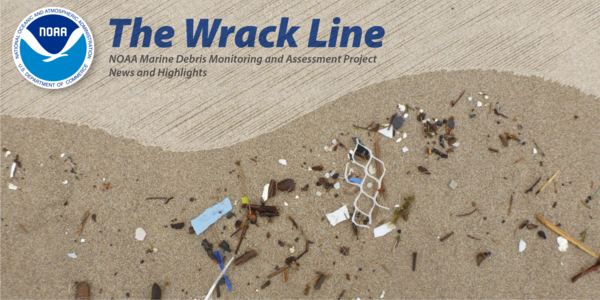
The Wrack Line is a newsletter for partners, participants, and data users of NOAA's Marine Debris Monitoring and Assessment Project (MDMAP).Thank you for reading!
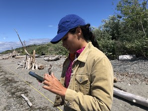 | For those who would prefer entering data on the beach rather than using datasheets, the data entry website works on any device but does require internet access.
At left: Elena Aguilar, graduate student with San Diego State University, tests mobile MDMAP data entry (Credit: NOAA). |
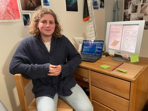 | We are so excited to now have the full MDMAP dataset available in one place! If you collected data using the accumulation method, those data can now be viewed alongside other MDMAP data in the visualizations and downloaded via data exports in a single spreadsheet. This integration represents over 4,400 surveys.
This effort was supported by summer intern Phileas Dazeley-Gaist. Phileas is student at College of the Atlantic. Over the course of 10 weeks, they applied and honed their coding skills by helping enter data, performing quality control checks, and cleaning the MDMAP dataset. Of their internship experience, Phileas shared that they "most enjoyed developing visualizations of the data to better explore problems and communicate solutions, all while making a meaningful contribution to important and compelling work." Thank you Phileas!
Above: Phileas is at home in front of screens full of code and data (Credit: Phileas Dazely-Gaist). |
We are often asked how MDMAP data are used, so we posted a list of examples here.
Each newsletter, we also feature at least one recent use of the data.
MDMAP at the 7th International Marine Debris Conference
Hosted in Busan, South Korea, from September 18-23, 2022, the 7th International Marine Debris Conference brought together policy makers, researchers, advocacy leaders, and educators from around the world to discuss new developments and future directions for addressing marine debris. Monitoring was the focus of 17 dedicated sessions. The importance of and need for consistent, harmonized data for tracking and informing prevention progress was a common message throughout the conference. Results from MDMAP made appearances in at least six talks, including: | 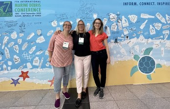 |
- NOAA’s Marine Debris Monitoring and Assessment Project: Adapting for Local to National Scales of Inference and Impact (Hillary Burgess, NOAA Marine Debris Program) during session Stories and Lessons from Around the World: How Monitoring Can Help Inform Actions to Tackle Marine Litter
- Inventories of Marine Litter and Meso Plastics, a Reliable Method for Determining Pollution in Marine-coastal Ecosystems (Denise Delvalle-Borrero, Technological University of Panama) during session Stories and Lessons from Around the World: How Monitoring Can Help Inform Actions to Tackle Marine Litter
- Using Scientific Knowledge to Influence Public Policy in the United States (Nancy Wallace, NOAA MDP) during session Science to Policy
- How We Count Counts: Examining Influences on Detection during Shoreline Surveys of Marine Debris (Hillary Burgess, NOAA MDP) during session Design, Statistical Analyses and Methods Standardization for Macrolitter Surveys
- Progress Toward Meaningful Monitoring: Confronting the Challenges of Survey Design and Reporting (Amy V. Uhrin, NOAA MDP) during session The future of the Science of Monitoring
- Decline in Marine Debris Abundance on Hawaiian Shores Noted through Observational Data and Interpreted using a Dynamic Model of Pacific Ocean Circulation (Carl Berg, Kauai Chapter of Surfrider Foundation) during session Integrated Marine Debris Observing System
Above: Marine Debris Program Science Team Staff at the 7th International Marine Debris Conference from left to right: Carlie Herring (Research Coordinator), Amy V. Uhrin (Chief Scientist), and Hillary Burgess (Monitoring Coordinator) (Credit: NOAA).
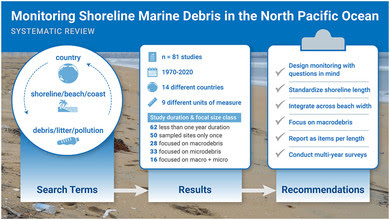 | New publication on Shoreline Monitoring
A new publication in the journal Environmental Pollution entitled “Towards a North Pacific long-term monitoring program for ocean plastic pollution: A systematic review and recommendations for shorelines” reviews published data (including from MDMAP!) on shoreline debris abundances across the North Pacific Ocean and makes recommendations for harmonizing monitoring efforts in this region. NOAA Marine Debris Program staff Amy V. Uhrin and Hillary Burgess are co-authors together with researchers from the Korea Marine Litter Institute, the Republic of Korea Naval Academy, and NOAA National Marine Fisheries Service Southeast Fisheries Science Center. The research team examined data and methods from 81 papers documenting shoreline debris in the North Pacific. |
Is the amount of marine debris changing over time? Use interactive time series graphs to find out! These graphs display the number of marine debris items per month per 100 meters of shoreline. Data can be either an individual site or a group of sites that you have selected.
For a single site: Click "visualize" from any MDMAP site page. If more than one survey protocol has been used at that site, they will appear on the same graph as separate series.
Averaged among a selection of sites: Click "visualize" from the MDMAP home page. The default view when not logged-in is all MDMAP data. When logged-in, the default view is "my sites."
Filter results using the search and filter bar to the left. Options include site names, states, countries, or participating organizations that survey multiple sites. You can add multiple filters. Remove filters using the "x" next to the filter. Try searching for "Galveston Bay Foundation" or "Texas" then click "visualize."
Grouping data from multiple sites is a powerful tool. However, be careful about drawing conclusions if data collection is sparse or inconsistent, and if the sites within the selection differed over time. As MDMAP grows and we have more data, the collective dataset will become more and more useful!
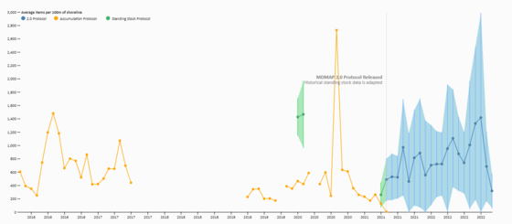
In the example above, data are filtered by “Texas” and all debris is displayed. Hovering over each point on the number of sites and surveys contributing to the average on display. Data can be filtered by country, state, or public groups. When logged-in, you can also filter by “my sites” or “my groups.”
Standard deviations are shown for surveys that sub-sampled within the survey site, using either the Standing Stock or MDMAP 2.0 protocols.
The default display is to all debris items. Filter by material or item type to look at specific categories!
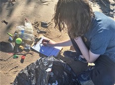 | During the Chesapeake Bay Foundation's fall student leadership conference near Lorton, Virginia, high schoolers did an MDMAP survey along the Potomac River. The students learned about scientific data collection and discussed the issues of plastics and marine debris in the Chesapeake Bay (Credit: Kassie Fenn). |
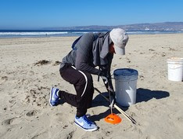 | AO Latinoamérica, an ocean education and stewardship volunteer organization based in Ensenada, Mexico established the first MDMAP site on the Baja peninsula: Playa Pacifica. Bienvenida al equipo! (Credit: Fernando Castillo). |
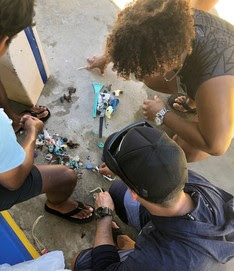 | NOAA Marine Debris Program staff Mark Manuel, Amy Gohres, and Shanelle Naone hosted an MDMAP training for the Mariana Islands Nature Alliance. Ten participants spent a half day learning the ropes of MDMAP and established the first MDMAP sites on the Northern Mariana Islands. We warmly welcome to the team! At left, trainees sort, count, and categorize debris (Credit: NOAA). |
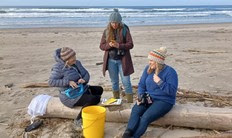 | During a creative writing and art retreat hosted by Heart of Cartm, participants conducted an MDMAP survey near Manzanita, Oregon. They then used the debris to create works of art. The retreat hosted people from diverse geography and professions united by a common interest in ocean health (Credit: Denise Harrington). |
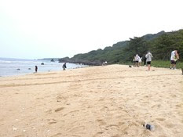 | At left, 11th grade students from the Taipei European School survey Venice beach on the coral island of XiaoLiuQiu in Taiwan. Through MDMAP, students learned science concepts, data collection skills, and explored the issue and solutions to marine debris (Credit: Nans Bujan). |